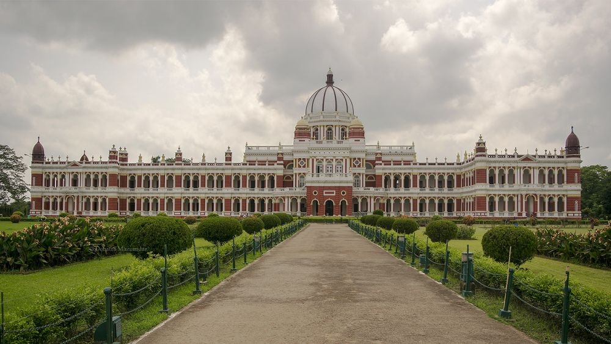

- Location: Cooch Behar, West Bengal, India
- Built: 1887
- Commissioned By: Maharaja Nripendra Narayan
- Architectural Style: Classical Western / Italian Renaissance
- Material Used: Red brick and stone
- Purpose: Royal residence of the Koch dynasty
- Features: Large dome, Corinthian columns, arched verandahs, Durbar Hall with intricate ceiling
- Area: Approximately 51,000 square feet
- Opening Hours: 10:00 AM - 5:00 PM (Closed on Fridays)
- Entry Fee: ₹5 for Indians, ₹100 for foreigners
- Maintained By: Archaeological Survey of India (ASI)
- Popular For: Colonial-era architecture, museum exhibits, cultural heritage
- Nearby Landmarks: Sagar Dighi, Madan Mohan Temple, Baneswar Shiv Temple